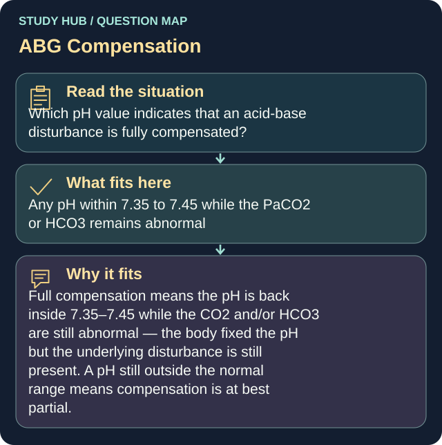

Which pH value indicates that an acid-base disturbance is fully compensated?
Answer
Any pH within 7.35 to 7.45 while the PaCO2 or HCO3 remains abnormal
Reasoning
Full compensation means the pH is back inside 7.35–7.45 while the CO2 and/or HCO3 are still abnormal — the body fixed the pH but the underlying disturbance is still present.
Clinical detail
A pH still outside the normal range means compensation is at best partial.
Why the other answers do not fit
- Any pH above 7.45 with an abnormal PaCO2
Full compensation means the pH is back inside 7.35–7.45 while the CO2 and/or HCO3 are still abnormal — the body fixed the pH but the underlying disturbance is still present.
- A pH of exactly 7.40 with all of the other reported values within normal range
A pH still outside the normal range means compensation is at best partial.
- Any pH below 7.35 with an abnormal HCO3
Full compensation means the pH is back inside 7.35–7.45 while the CO2 and/or HCO3 are still abnormal — the body fixed the pH but the underlying disturbance is still present.
